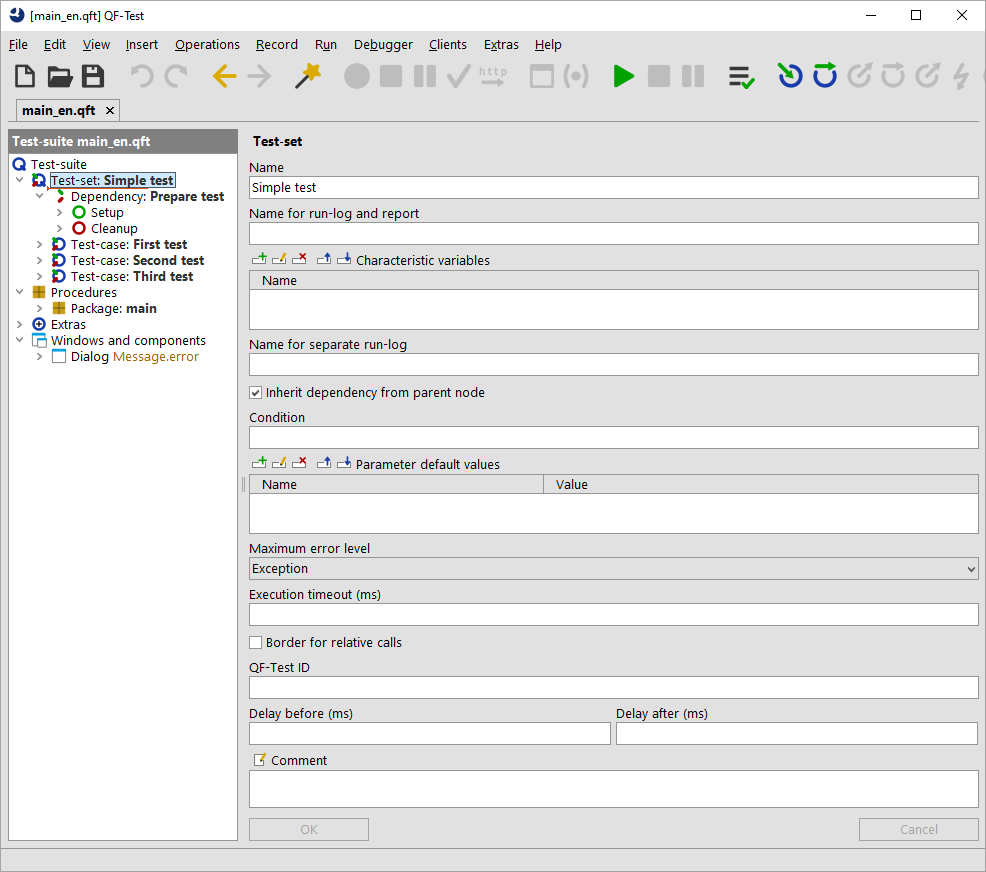

| Version 6.0.3 |
The graphical user interface (GUI) of an application consists of one or more windows which hold a number of components. These components are nested in a hierarchical structure. Components that hold other components are called containers. As QF-Test is itself a complex application, its main window will serve well as an example:
|
|  | ||
|
| Figure 5.1: Components of a GUI | ||
The window contains a menu bar which holds the menus for QF-Test. Below that is the toolbar with its toolbar buttons. The main area employs a split pane to separate the tree view from the details. The tree view consists of a label ("Test-suite") and the tree itself. The detail view contains a complex hierarchy of various components like text fields, buttons, a table, etc. Actually there are many more components that are not obvious. The tree, for example, is nested in a scroll pane which will show scroll bars if the tree grows beyond the visible area. Also, various kinds of panes mainly serve as containers and background for other components, like the region that contains the "OK" and "Cancel" buttons in the detail view.
Unless explicitly stated otherwise, the term "component" in this manual refers to elements of a GUI, regardless of what the individual components are called in the respective GUI technology.
| Last update: 9/6/2022 Copyright © 1999-2022 Quality First Software GmbH |